Introducing The Most Precise At-Home Hearing Test.
Take the first step to improve your hearing, engineered by the world's leading hearing health pioneer – Audicus ® .
Start your hearing test now »-
The first online hearing test accurate enough to be used for tuning custom hearing aids.
-
Headphones and a quiet environment required.
-
Compatible with any computer, phone or tablet.
-
Engineered by Audicus, the world's leading hearing health pioneer.
-
Trusted by over 30,000 people around the world, and counting.
 

Discover your unique hearing profile
in seven minutes or less.
Complete the Audicus Hearing Test and receive a detailed analysis of the state of your hearing.
Start your hearing test now » *Two years of research, tens of thousands of audiograms.
For the first time, Audicus introduces an online hearing test accurate enough to tune a custom hearing aid device.
We rigorously compared tens of thousands of audiologists' audiograms and our own online test results until our engineering team was completely satisfied with the accuracy of the test.
Designed based on complex data models and data-driven hearing profile clusters, we are now able to identify your own unique hearing profile with the highest degree of certainty.
Test your hearing at the comfort of your home, without compromising precision and accuracy.
All you need is headphones.
At Audicus, we are on a mission to empower everyone to know the state of their hearing. Therefore, we designed a test that is as easy as possible. The only thing you need is a quiet environment and a pair of headphones.
Engineered by Audicus,
The New-York-based hearing health pioneer.
-
Audicus team, summer 2017
Our New York team is committed to helping you improve your hearing using state-of-the-art research and technology. For the past six years, we have designed the world's best hearing aid products for tens of thousands of customers.
By clicking "Start Your Hearing Test", you acknowledge that you have understood Audicus’ Terms & Conditions. This Audicus Hearing Test does not replace a visit to a hearing care professional and it does not constitute medical or other professional advice or diagnosis. If you think that you are experiencing hearing loss, we advise you to consult a professional hearing care specialist who can conduct a more comprehensive examination.
Terms & Conditions